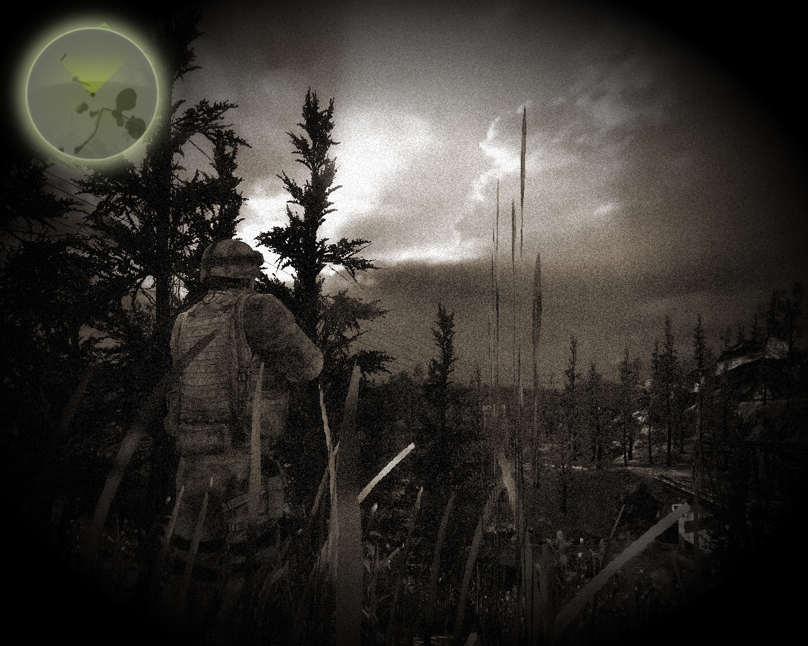

This page shows experiences with shaders and game programming.
Old Film Effect on Unity 3D

Old Film effect on Unity 3D
Post-processing Motion Blur Effect on Unity 3D
Post-processing Motion Blur on Unity 3D
Ink Press Transition Effect on Unity 3D
Ink Press Transition Effect on Unity 3D
The Last Marine
The Last Marine
OpenGL Game Prototype
OpenGL Game Prototype